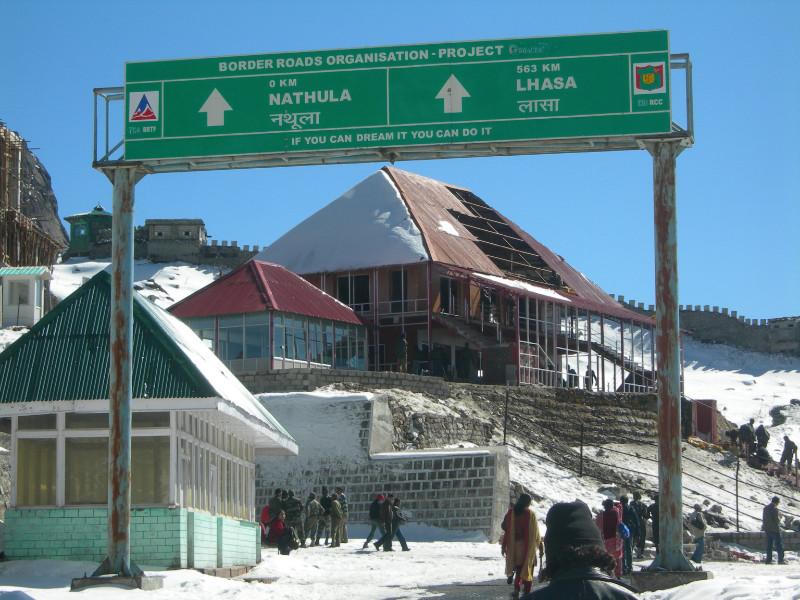
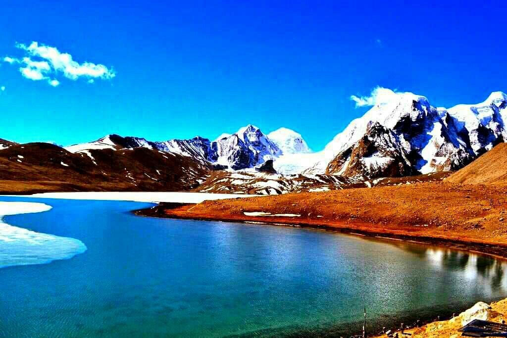
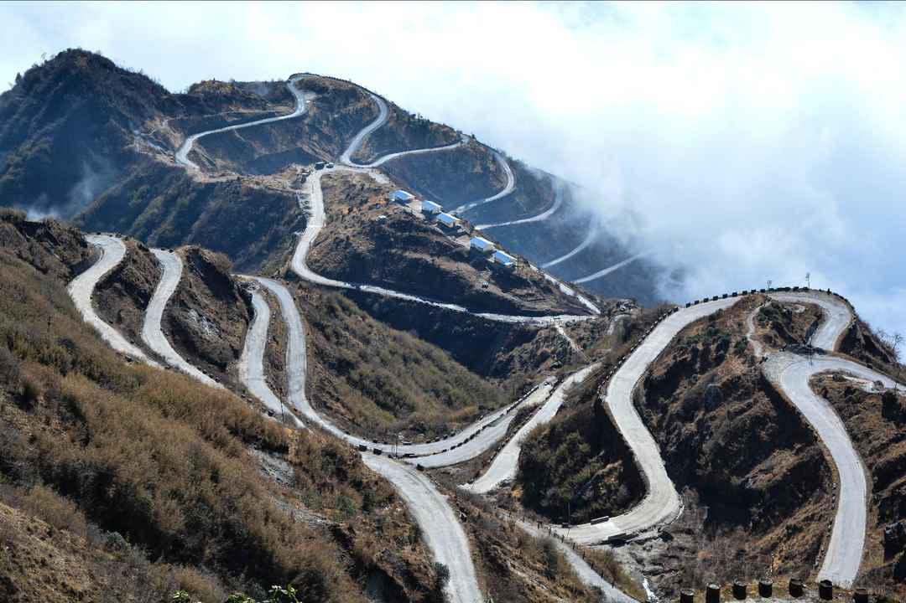

A glacial lake and a Himalayan border pass on the old trade road east of Gangtok
Tsomgo Lake (also written Tsongmo or Changu) is a glacial lake about 40 km east of Gangtok, at roughly 3,750 metres. The water changes colour with the light and often freezes in winter. A paved road runs along the shore, where visitors walk, photograph and, in season, take short yak rides. Inner-line permits are required.
Further up the same road, Nathula Pass (about 4,310 m) marks the old Silk Route crossing between India and the Tibetan plateau. Entry is limited, depends on weather and official permissions, and is sometimes closed on fixed days of the week. Baba Mandir, a shrine dedicated to a soldier, sits on a nearby spur. Most people visit the lake and the pass as a single day trip from Gangtok.

The lake is open and the road is usually reliable.
Clear skies and crisp air on the pass road.
A frozen lake; Nathula depends on snow and official orders.
Mist and landslides make the day uncertain.



Both need permits and depend on weather. Share your dates and we can advise what is usually open.